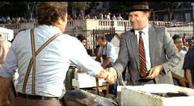

| French
Connection (SE) II/A,A- |
| Fox/1975/119/ANA 1.85 |
As
good as The French Connection plays, The French Connection II is even more gut
wrenching. The setting is Marseilles. American narcotics cop Popeye Doyle, the proverbial fish out
of water, has come to track drug lord Alain Charnier in a cooperative effort with the French
police. Director John Frankenheimer's consistently outstanding choices make The French
Connection II sing in perfect key from the outset. There’s a huge amount of French spoken in
the film, but there are no English titles. Effectively, this puts the audience int he same shoes as
Doyle, who probably doesn’t even understand merde,
and must dance around the language dancing around the language. The heroine injections sequence is
dirty and despicable. Hackman’s transformation is harrowingly real as Doyle descends into a
nightmare of liquefied powder. They are only topped by the amazingly forceful and unpredictable
depiction of a cold turkey cure.
 |
| A fish out of water. ©Fox |
Much of the movie is filmed in the back alleys of a seedy Marseilles. It feels dangerous and
corrupt. There are several set pieces in The French Connection II that are just as thrilling
as the first French Connection. Doyle’s breathtaking Marseilles street chase is nothing
short of brilliant. Move by move, relentless, long strides bulling through crowds, legs bucking
under the enormous strain, Doyle’s focus never breaks. It’s a wondrous and seamless montage of
image.
Frankenheimer clearly determined to give French Connection II
visual treatment similar to the original. The style works brilliantly well again, adding danger to
every Marseilles corner. French cinematographer Claude Renoir provides the perfect images and
lighting with a variety of hand-held shots and dramatic zooms.. The French Connection II is
a paradigm of visual filmmaking. John Frankenheimer can tell a story without words; not just
action, but a thoughtful and pensive story. The film lives just as vitally as an internal and
brooding work of art.
Casting is superb. With Hackman and Fernando Rey repeating their roles as Doyle
and Charnier, most of the other significant parts are cast with French actors. Bernard Fresson has
the center of gravity of a Sumo wrestler in creating a tough policeman. Philippe Leotard is another
fine choice as Charnier's henchman Jacques.
Doyle's obnoxious charm comes across far more effectively in French Connection II. The scene
in the small French Bar is a diamond on its own. Doyle locks horns with a fire plug of a French
policeman Barthlemy in II. He's a much more satisfying colleague adversary than the Federal
Narcotics Bureau man in the original.
Along with the the hand held photography, there
are lots of long zooms lending a grainy look to the film. The DVD transfer delivers tightly
controlled grain. Images are uniformly sharp save for those long lens zooms that are originally
softened. Overall, the original elements are very clean. The DVD exhibits no artificial edginess.
Skin tones have a nice range. Contrast is excellent. Black level is deep, shadow detail revealing.
Various lighting schemes are captured perfectly. Color purity is very good. The Dolby Digital 2
Channel mono is free of any distortion.
There are two commentaries as special edition extras. The articulate John
Frankenheimer supplies his memories of the challenge of making a sequel to such a terrific film as The
French Connection. Frankenheimer is on target and his recollections are fresh. A second
commentary features producer Robert Rosen and Gene Hackman. Rosen's commentary is recorded while
watching the film while Hackman's seems cut in from an interview, though the commentary is
introduced by both principals with a welcome to the special edition of The French Connection II.
There's a lot more Rosen than Hackman, but Rosen is a good speaker and his memories are welcome
and entertaining.
|
|
|
|

The Movie Poster
Archive includes extensive poster images from the films of stars like Susan Hayward, Kirk Douglas,
Katharine Hepburn and many more. Our
featured star is Edward G. Robinson

Selections from the Feature Archive
include articles on Akira Kurosawa, Frank
Darabont, Blonde Bimbos, Hollywood Street Gangs, or Vietnam: The
Hollywood Pariah, and many more....
Puttin on the
Ritz

Fred Astaire and Cyd Charisse bring Silk Stockings to life, a remake of Ninotchka, one of many
films successfully turned into musicals by the Hollywood dream factory. Read all about remakes into
musicals by clicking on the divine dancers.
Capturing Kennedy

Steven Culp extracts the
essence of Robert F. Kennedy in Roger Donaldson's outstanding feature Thirteen Days. Culp recently shared
insights on the performance and his career with Films on Disc. Click the image for more.
 
ISF Monitor Calibrations in the
Tristate New York area. Lots of hardware info and frequent hardware peaks from video expert Kevin
Miller.They may be judgmental, but that's the point, isn't it. Lots of DVD reviews plus news and
more.

The National Film Preservation Foundation (NFPF) is the nonprofit organization created by the U.S. Congress to save
America's film heritage.

Home of The American Film Institute.

Films of the Golden Age is
a showcase for special feature articles on film
people and Hollywood history, all illustrated with beautiful photographs and classic movie art.
|